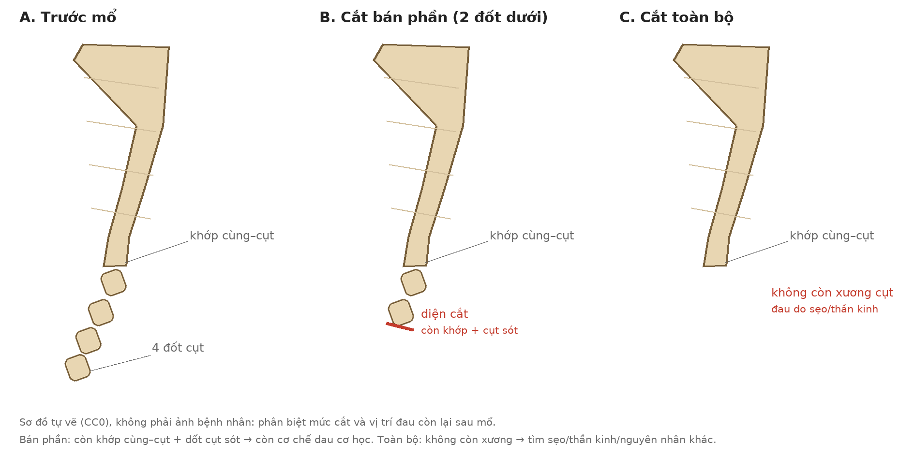
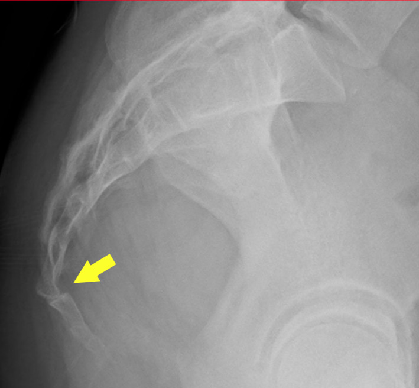
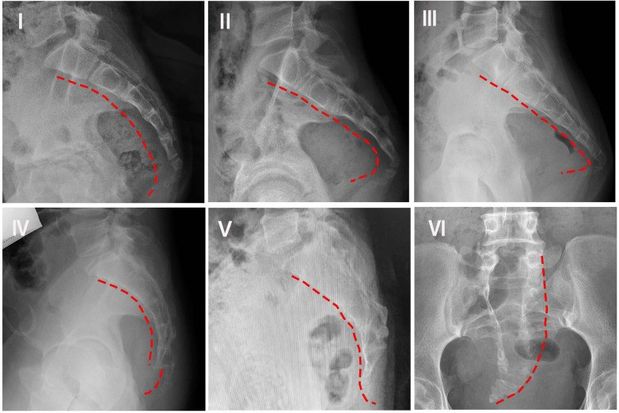

304 — Đau dai dẳng sau cắt xương cụt: đọc phim sau mổ, phân biệt cụt sót – sẹo thần kinh – nhiễm trùng – đau thần kinh thẹn
Tags: pattern:dau-vung-cut pattern:dau-sau-mo pattern:bat-on-khop pattern:nhiem-trung-sau-mo vung:xuong-cut vung:khung-chau anatomy:xuong-cut protocol:phim-dong-hoc protocol:CT-xuong-cut protocol:MRI-khung-chau score:Maigne score:Nathan
Mức chắc chắn (certainty): tổng hợp y văn (literature synthesis) — ghép 112 ca theo dõi 1 năm sau cắt xương cụt (Bone Jt Open 2021, PMC8325972), 97 ca cắt bán phần (J Orthop Surg Res 2023, PMC10605957), 55 ca so sánh mổ vs bảo tồn (Int Orthop 2024, PMC11246298), tổng quan hệ thống 42 nghiên cứu (Neurospine 2026, PMC13152700), hình thể–động học xương cụt (Front Pediatr 2026, PMC13006408) và mô hình đau đa cơ chế CPPS (J Pain Res 2026, PMC13702083). Không có ca do nhóm tự chụp.
Câu hỏi thực hành: nữ 42 tuổi, cắt xương cụt bán phần 8 tháng trước vì đau khi ngồi; vết mổ đã lành, không sốt, nhưng đau y như trước mổ, tăng khi ngồi lâu và khi đứng dậy. Phim nghiêng đứng "không thấy bất thường". Câu hỏi: đau do cụt còn sót, do sẹo thần kinh, do nhiễm trùng mạn, hay do đau thần kinh thẹn/đau trung ương — và có nên mổ lại không? Bài chốt ba quyết định: (1) sau cắt xương cụt, "còn xương cụt" không đồng nghĩa "mổ sót" — phải biết đã cắt bán phần hay toàn bộ; (2) phim động học ĐỨNG–NGỒI là bắt buộc, vì bất ổn chỉ lộ khi ngồi; (3) chỉ mổ lại khi có nguyên nhân cấu trúc rõ (cụt sót mất vững, áp-xe/viêm xương, u); đau không có nguồn cấu trúc → block/thần kinh/đa mô thức, không cắt thêm. Nối 305 – Đau xương cụt (coccygodynia), 556 – Đau sàn chậu cơ–mạc & đau thần kinh thẹn, 370 – Nhiễm trùng cơ xương khớp.
1. Tổng quan bệnh học – cơ chế hình ảnh: vì sao cắt bỏ xương mà đau vẫn còn
- Cắt xương cụt (coccygectomy) không "xóa" cả cơ chế đau. Xương cụt là điểm tựa khi ngồi, nơi bám của cơ sàn chậu, dây chằng cùng–cụt, dây thần kinh cùng–cụt và thần kinh thẹn. Mổ lấy xương nhưng khớp cùng–cụt, sẹo mô mềm, thần kinh và hệ thần kinh trung ương vẫn còn — đó là 4 nguồn đau có thể tồn tại.
- Kết quả mổ không phải 100%: tổng quan ghi nhận thành công 60–90% tùy nguyên nhân, kỹ thuật và thời gian theo dõi (Neurospine 2026, PMC13152700). Trong 112 ca có theo dõi ≥ 1 năm, 70% hài lòng, 18% lưỡng lự, 13% không hài lòng; nhóm không hài lòng có VAS 79,1 → 78,5 (gần như không đổi), trong khi nhóm hài lòng 69,0 → 20,8 (Bone Jt Open 2021, PMC8325972). Không có yếu tố tiên lượng nào (tuổi, BMI, hút thuốc, thời gian đau, VAS/ODI trước mổ) dự báo được kết quả — nghĩa là không thể hứa trước "mổ là hết đau".
- Loạt 97 ca cắt bán phần: VAS 8 → 2,6, ODI 39,8 → 13,4; nhưng thành công 88% ở nhóm chấn thương vs 71% ở nhóm không chấn thương (p = 0,047), biến chứng 14% vs 17% (J Orthop Surg Res 2023, PMC10605957). Nguyên nhân đau trước mổ quyết định kết quả sau mổ — đây là lý do phải chọn bệnh nhân, không chỉ đọc phim.
- TẠI SAO nhiễm trùng là bẫy: vùng mổ sát hậu môn, trong rãnh mông, ẩm, nhiều vi khuẩn. Tỷ lệ nhiễm vết mổ trong y văn 5–15%, có loạt tới 36% (PMC13152700); đường mổ giữa tệ hơn cạnh giữa/Z-plasty. Nhiễm biểu hiện muộn bằng đau tăng + chảy dịch, có thể không sốt — dễ bị gán cho "đau do cụt còn sót".
- TẠI SAO phim thường quy dễ âm tính: xương cụt nhỏ, nằm sau trực tràng, không chịu lực đứng; trên phim nghiêng đứng nhiều bất ổn biến mất. Nghiên cứu động học cho thấy bất thường chuyển động tới 69% bệnh nhân đau cụt; khi ngồi: trượt ra sau 22,1%, trượt ra trước 5,3%, tăng di động 27,4%, gai xương 14,4%, chỉ 30,8% bình thường (PMC13006408). Vì vậy đứng–ngồi là cặp phim bắt buộc, không phải "chụp thêm cho đủ".
- TẠI SAO hình thể xương cụt quan trọng: phân loại Nathan I–VI (I: cong nhẹ ra trước; II: cong mạnh, đỉnh hướng thẳng ra trước; III: gập góc cấp; IV: trượt ra trước ở khớp cùng–cụt/gian cụt; V: ngả sau + gai xương; VI: vẹo/lệch bên). Type I gặp > 50% dân số (biến thể bình thường); type II gặp 83,3% (50/60) ở bệnh nhân đau cụt vs 40% ở nhóm chứng — tức hình thể chỉ là gợi ý, không phải chẩn đoán.
- TẠI SAO đau có thể "không tương xứng" với hình ảnh: mô hình CPPS (Coccyx Pain Phenotype Score) tổng hợp 4 cơ chế — cơ học, cơ–mạc, nhạy cảm thần kinh ngoại vi, nhạy cảm trung ương; tác giả nhấn mạnh tương quan hình ảnh–lâm sàng yếu và đau dai dẳng dù đã điều trị đúng tổn thương giải phẫu (J Pain Res 2026, PMC13702083). Đây là nền để không mổ lại mù khi phim "sạch".
- Đau sau mổ khác đau trước mổ ở chỗ nào: trước mổ, đau thường do khớp/gai xương; sau mổ, thêm diện cắt xương, sẹo co kéo, mô hạt, mảnh xương còn lại. Trên CT, diện cắt là bờ xương "mới" không có vỏ xơ; đừng đọc là tiêu xương do ung thư. Trên MRI, sẹo xơ giảm tín hiệu T2 và ngấm thuốc muộn — khác ổ áp-xe viền ngấm + hạn chế khuếch tán.
2. Mẫu hình + chẩn đoán phân biệt theo thời gian và vị trí (Gamut)
- Gamut theo thời điểm sau mổ:
- < 6 tuần: tụ máu/tụ dịch, nhiễm trùng vết mổ, bục chỉ/hở vết mổ, đau do phù nề — thường khu trú, có sốt/đỏ/chảy dịch.
- 6 tuần – 6 tháng: cụt còn sót/khớp còn bất ổn, sẹo thần kinh, viêm xương tủy mạn, đau do tư thế chưa phục hồi.
- > 6 tháng: đau thần kinh thẹn, đau tham chiếu cột sống thắt lưng, đau trung ương/nociplastic, u (chordoma, GCT, di căn), nang Tarlov, rò cùng–cụt.
- Gamut theo vị trí đau:
- Đau giữa, khu trú đúng xương cụt, tăng khi ngồi/đứng dậy: cơ học — cụt sót, khớp cùng–cụt, gai xương.
- Đau lan ra sau mông, đùi sau, không đúng điểm cụt: tham chiếu L5–S1, cơ sàn chậu, khớp cùng–chậu.
- Đau vùng đáy chậu/âm hộ/dương vật, tăng khi ngồi, không đau khi ngủ: đau thần kinh thẹn (Nantes).
- Đau bỏng rát, dị cảm, lan rộng, kèm rối loạn giấc ngủ/cảm xúc: nhạy cảm trung ương/CPPS.
- Đau + chảy dịch + sốt/night pain + sụt cân: nhiễm trùng/u — cờ đỏ.
- Gamut theo hình ảnh:
- Diện cắt/xương còn lại bình thường, không phù mô mềm → không có nguyên nhân cấu trúc rõ.
- Di lệch/gập góc khi ngồi, hết khi đứng → bất ổn động học.
- Ổ dịch viền ngấm, khí trong mô, phù lan → áp-xe.
- Tiêu xương, phản ứng màng xương, khối mô mềm → viêm xương/u.
- Nang dịch quanh rễ S2–S3 → Tarlov.
- Mnemonic "SORC": Structural (cụt sót/bất ổn), Osteomyelitis/infection, Radicular/pudendal (thần kinh), Centralized (đau trung ương/CPPS).
3. Bảng so sánh phân biệt (ma trận đối chiếu)
| Thực thể (entity) | Hình ảnh điển hình | Chốt vào (rule-in) | Chốt loại (rule-out) | Gợi ý xác nhận |
|---|---|---|---|---|
| Cụt còn sót/khớp còn bất ổn | Đoạn xương cụt còn lại ở đầu gần; khi ngồi gập góc/trượt so với đứng; diện cắt không phù | Đau đúng điểm cụt + đau tăng khi ngồi + phim đứng–ngồi lệch | Phim động học bình thường, đau lan ngoài vùng cụt → nghĩ thần kinh | Phim nghiêng đứng + ngồi, đo góc/trượt; CT xương; so phim trước mổ |
| Sẹo thần kinh/đau thần kinh thẹn | MRI: dải sẹo giảm tín hiệu T2, dày thần kinh thẹn; không có ổ dịch/xương | Đau vùng đáy chậu, tăng khi ngồi, không đau khi ngủ; block thần kinh thẹn dương | Đau khu trú xương cụt, block hạch gian dương → không phải thần kinh thẹn đơn thuần | Khám thần kinh; block chẩn đoán; MRI khung chậu 3D |
| Nhiễm trùng vết mổ/viêm xương tủy | Ổ dịch viền ngấm, khí mô mềm, phù lan; CT tiêu xương + phản ứng màng xương; MRI hạn chế khuếch tán | Chảy dịch/mủ + đau tăng + CRP/ESR tăng; khởi phát sau mổ | Vết mổ khô, CRP bình thường, không ổ dịch → không nhiễm | Cấy dịch/vết mổ; CT/MRI cản quang; không chọc qua vùng da viêm |
| U vùng cùng–cụt (chordoma, GCT, di căn) | Khối tiêu xương, phá vỏ, thành phần mô mềm; chordoma thường T2 sáng | Đau đêm, sụt cân, khối sờ thấy, tiêu xương không giải thích | Tiêu xương nhỏ quanh diện cắt, không khối → hậu phẫu | MRI + CT; sinh thiết nếu khối |
| Nang Tarlov (S2–S3) | Nang dịch quanh rễ, tín hiệu dịch, có thể giãn xương | Đau rễ S2–S3, dị cảm vùng yên ngựa, đau khi ngồi | Không nang, đau khu trú xương cụt → không Tarlov | MRI thắt lưng–cùng; EMG nếu cần |
| Đau tham chiếu cột sống thắt lưng | Thoát vị đĩa L5–S1, hẹp ống sống, thoái hóa khớp cùng–chậu | Đau lan theo rễ, nghiệm pháp Lasègue, đau tăng khi ho | Đau khu trú cụt, không lan → không tham chiếu | MRI thắt lưng; khám thần kinh |
| Đau trung ương/nociplastic (CPPS) | Hình ảnh không tương xứng hoặc bình thường; không ổ dịch, không bất ổn | Đau lan rộng, dị cảm, rối loạn giấc ngủ, đã thất bại nhiều can thiệp | Có nguyên nhân cấu trúc rõ và block tương ứng → không phải trung ương đơn thuần | Sàng lọc tâm lý–giấc ngủ; đáp ứng đa mô thức; không mổ |

*Sơ đồ tự vẽ (CC0), không phải ảnh bệnh nhân: (A) trước mổ — 4 đốt cụt và khớp cùng–cụt; (B) cắt bán phần — còn khớp cùng–cụt + đốt cụt sót, nên cơ chế đau cơ học vẫn còn; (C) cắt toàn bộ — không còn xương, đau còn lại phải tìm ở sẹo/thần kinh/nguyên nhân khác. Đây là điểm mấu chốt khi đọc phim sau mổ: biết mức cắt trước khi gọi "cụt sót".*4. Protocol chẩn đoán + phân độ + khi nào can thiệp
- Bước 1 — hỏi đúng 6 câu: (1) mổ cách đây bao lâu, (2) cắt bán phần hay toàn bộ, (3) vết mổ đã lành chưa, có chảy dịch/sốt, (4) đau có giống trước mổ không, (5) đau khi ngồi/đứng dậy/đi cầu, (6) có dị cảm đáy chậu, tiểu/đại tiện bất thường, đau đêm.
- Bước 2 — khám: sẹo, điểm đau khu trú xương cụt, khám thần kinh thẹn (vùng yên ngựa, phản xạ, cảm giác), Lasègue, khớp cùng–chậu, cơ sàn chậu; không thăm khám trực tràng mạnh ngay sau mổ.
- Bước 3 — phim động học đứng–ngồi (bắt buộc):
- Nghiêng đứng và nghiêng ngồi (ngồi trên ghế cứng, chịu lực), đo góc gập cụt và độ trượt so với xương cùng.
- Maigne: gập > 25° khi ngồi = tăng di động; < 5° = bất động; 5–25° = bình thường; trượt ra sau = luxation (thường gặp ở người béo), trượt ra trước ít hơn.
- Không dùng phim đứng đơn thuần để loại trừ bất ổn — trong loạt 21 bệnh nhân, type IV chiếm 71% khi ngồi trong khi type I chiếm 66% khi đứng.
- Bước 4 — CT xương cụt (≤ 1 mm, coronal + sagittal + 3D): đo chiều dài đoạn cụt còn lại, diện cắt, gai xương, khoảng khớp cùng–cụt, tiêu xương/ phản ứng màng xương, khối mô mềm. CT là chuẩn để phân biệt cụt sót với diện cắt bình thường.
- Bước 5 — MRI khung chậu (T1, T2/PDFS, T1 sau tiêm ± fat-sat) khi: nghi áp-xe/viêm xương, u, nang Tarlov, sẹo thần kinh, hoặc CT không giải thích đau. MRI là phương thức tốt nhất để đánh giá đĩa/khớp cùng–cụt, mô mềm và dây thần kinh thẹn; không cần cản quang nếu chỉ tìm phù/dịch.
- Bước 6 — xét nghiệm & block chẩn đoán: CRP, ESR, WBC (nhiễm trùng), cấy dịch/vết mổ; block hạch gian (ganglion impar) hoặc block thần kinh thẹn dưới fluoroscopy/CT — giảm đau rõ trong thời gian tác dụng thuốc tê gợi ý nguồn thần kinh và hỗ trợ chọn RFA.
- Bước 7 — điều trị theo nguyên nhân:
| Tình huống | Xử trí | Số liệu / lưu ý |
|---|---|---|
| Cụt sót mất vững, đau khu trú, phim động học rõ | Cân nhắc mổ lại lấy phần còn lại + physiotherapy | Không có thử nghiệm so sánh mổ lại vs không mổ; chỉ khi có nguồn cấu trúc rõ |
| Nhiễm trùng vết mổ/áp-xe | Dẫn lưu + kháng sinh; viêm xương → cần cắt lọc | Nhiễm 5–15%, tới 36%; đường mổ giữa → cạnh giữa/Z-plasty |
| Đau thần kinh thẹn | Block thần kinh thẹn + thuốc thần kinh (amitriptyline 10–25 mg buổi tối; gabapentin 300 mg/ngày tăng dần); RFA | Tiêu chuẩn Nantes; block dương tính hỗ trợ chẩn đoán |
| Đau cụt không cấu trúc, block hạch gian dương | RFA/PRF hạch gian hoặc block lặp lại | Giảm VAS 50–80% trong các loạt; ít biến chứng |
| Đau trung ương/CPPS | Đa mô thức: physiotherapy, giấc ngủ, tâm lý, thuốc thần kinh; tránh mổ lặp | Tương quan hình ảnh–lâm sàng yếu; đau có thể tồn tại dù mổ "đúng" |
| U/Tarlov | Chuyển chuyên khoa cột sống–u bướu, sinh thiết/đánh giá | Không chọc mù; MRI + CT trước |
flowchart TD
A[Đau dai dẳng sau cắt xương cụt] --> B{Khám: đau khu trú xương cụt?}
B -->|Không| C[Khám thần kinh thẹn, Lasègue, khớp cùng-chậu]
B -->|Có| D[Phim nghiêng ĐỨNG + NGỒI: góc/trượt]
D --> E{Bất ổn động học?}
E -->|Có| F[CT: đoạn cụt còn lại, diện cắt, gai xương]
E -->|Không| G[CT + MRI: cụt sót, sẹo, áp-xe, u, Tarlov]
C --> H[Block thần kinh thẹn / hạch gian]
F --> I{Có nguyên nhân cấu trúc rõ?}
G --> I
I -->|Có| J[Điều trị đích: dẫn lưu/kháng sinh, mổ lại có chọn lọc, xử trí u]
I -->|Không| K[Đa mô thức: physiotherapy, thuốc thần kinh, RFA, tâm lý]
H --> K
J --> L[Theo dõi VAS, chức năng, vết mổ]
K --> L
- Theo dõi: VAS + ODI + giấc ngủ lúc 6 tuần, 3 tháng, 6 tháng; chụp lại chỉ khi có thay đổi lâm sàng (đau mới, chảy dịch, sốt, khối), không chụp định kỳ vô ích.
5. Biến thể bình thường và cạm bẫy
- Bẫy 1 — gọi "cụt sót" khi đã cắt bán phần: cắt bán phần cố ý để lại đốt gần; trên phim, đoạn xương còn lại là bình thường, không phải "mổ sót". Phải đọc bệnh án/đối chiếu phim trước mổ trước khi kết luận.
- Bẫy 2 — chỉ chụp phim nghiêng đứng: bất ổn chỉ lộ khi ngồi; type IV 71% chỉ thấy khi ngồi. Thiếu phim ngồi = bỏ sót nguyên nhân cơ học.
- Bẫy 3 — tin rằng "phim bình thường = hết đau": 70% hài lòng nhưng 13% không hài lòng dù mổ đúng; tương quan hình ảnh–lâm sàng yếu. Không mổ lại chỉ vì bệnh nhân còn đau.
- Bẫy 4 — bỏ sót nhiễm trùng mạn: đau tăng + chảy dịch không cần sốt; CRP/ESR có thể chỉ tăng nhẹ. Hỏi kỹ vết mổ, nhìn, sờ, cấy trước khi gán "đau thần kinh".
- Bẫy 5 — nhầm đau thần kinh thẹn với đau cụt: đau lan đáy chậu/âm hộ/dương vật, tăng khi ngồi, không đau khi ngủ, block thẹn dương. Cắt thêm xương không giúp.
- Bẫy 6 — bỏ sót u/Tarlov: đau về đêm, sụt cân, khối, tiêu xương, dị cảm yên ngựa → MRI trước khi mổ lại.
- Bẫy 7 — "mổ rộng hơn là hết đau": sau khi đã cắt toàn bộ, không còn xương để cắt; đau do sẹo/trung ương không đáp ứng mổ. Đây là lý do phải phân tầng cơ chế trước.
- Cạm bẫy mặt cắt: trên CT ngang, đoạn cụt sót có thể bị đọc là mảnh xương lạc; luôn dựng sagittal và so bờ diện cắt với phim trước mổ. Trên MRI, sẹo xơ giảm tín hiệu có thể giả u xơ; dùng T2/PDFS + T1 sau tiêm và bối cảnh hậu phẫu.
6. Tự lượng giá — Blind Quiz
Ca 1 — Nữ 42 tuổi, đau cụt 2 năm, tăng khi ngồi; phim nghiêng chụp ở tư thế chịu lực.

- Câu hỏi: Bất thường nằm ở đâu? Vì sao phim đứng có thể bỏ sót? Cần chụp gì tiếp?
Bấm để hiện đáp án (findings + chẩn đoán)
- Dấu hiệu (findings): xương cụt trượt ra trước so với xương cùng (mũi tên vàng), mất đường cong bình thường; trên phim nghiêng thấy rõ di lệch ở khớp cùng–cụt.
- Chẩn đoán (diagnosis): bất ổn/trượt khớp cùng–cụt — cơ chế cơ học của đau cụt; phim đứng có thể bình thường vì bất ổn chỉ lộ khi chịu lực.
- Bước tiếp: phim nghiêng ngồi (và đứng) để đo góc/trượt; nếu vẫn nghi ngờ → CT sagittal; điều trị đầu tay bảo tồn (đệm ngồi, physiotherapy), block hạch gian nếu đau nhiều.
- Nguồn ảnh: J Gen Fam Med 2022 (PMC9634120), CC BY 4.0.
Ca 2 — Sáu phim nghiêng/AP của xương cụt: hình nào là biến thể bình thường, hình nào gợi ý bất ổn?

- Câu hỏi: Gọi tên type I–VI. Type nào gặp > 50% dân số? Type nào gặp nhiều ở bệnh nhân đau cụt?
Bấm để hiện đáp án
- Dấu hiệu (findings): I cong nhẹ ra trước; II cong mạnh, đỉnh hướng thẳng ra trước; III gập góc cấp; IV trượt ra trước ở khớp cùng–cụt/gian cụt; V ngả sau + gai xương; VI vẹo/lệch bên.
- Chẩn đoán (diagnosis): Nathan I–VI. Type I > 50% dân số (bình thường); type II 83,3% (50/60) ở bệnh nhân đau cụt vs 40% ở nhóm chứng — hình thể gợi ý, không chẩn đoán.
- Vì sao: type IV (trượt) thường chỉ thấy khi ngồi; type V có thể kèm gai xương gây đau.
- Nguồn ảnh: Front Pediatr 2026 (PMC13006408), CC BY 4.0.
Ca 3 — Bệnh nhân đau dai dẳng 8 tháng sau cắt xương cụt. Xem sơ đồ: cần hỏi gì trước khi kết luận "mổ sót"?
- Câu hỏi: Hai kiểu cắt khác nhau ở đâu? Kiểu nào còn cơ chế đau cơ học? Kiểu nào buộc phải tìm nguyên nhân ngoài xương?
Bấm để hiện đáp án
- Dấu hiệu (findings): (A) trước mổ 4 đốt + khớp cùng–cụt; (B) cắt bán phần còn 2 đốt gần + khớp; (C) cắt toàn bộ, không còn xương cụt.
- Chẩn đoán (diagnosis): (B) vẫn còn khớp cùng–cụt + đoạn cụt sót → cơ chế cơ học có thể còn; (C) không còn xương → đau còn lại phải tìm ở sẹo/ thần kinh/ trung ương/ u.
- Vì sao: tổng quan cho thấy cắt bán phần và toàn bộ cho kết quả giảm đau tương tự, nên "cắt thêm" không mặc nhiên giải quyết đau; phải đối chiếu mức cắt với phân bố đau và phim động học.
- Nguồn ảnh: sơ đồ tự vẽ, CC0.
Bài liên quan chéo
- 300 – Tổng quan Hệ Cơ – Xương – Khớp
- 305 – Đau xương cụt (coccygodynia): phim động học & bất ổn khớp cùng–cụt
- 556 – Đau sàn chậu cơ–mạc & đau thần kinh thẹn
- 370 – Nhiễm trùng cơ xương khớp
- 320 – Gãy xương & trật khớp cấp cứu
- 309 – Loét tì đè & viêm xương tủy vùng khung chậu
Ảnh
- 2 ảnh CC BY 4.0 (Front Pediatr 2026: 1; J Gen Fam Med 2022: 1) — nguyên bản, không crop/ghép.
- 1 sơ đồ tự vẽ CC0 (
304_dau-sau-cat-xuong-cut_so-do-CC0.png) — không phải ảnh bệnh nhân, dùng để phân biệt mức cắt. - Chi tiết trong
images/CREDITS.md.
Không dùng để chẩn đoán độc lập khi chưa có người hướng dẫn.